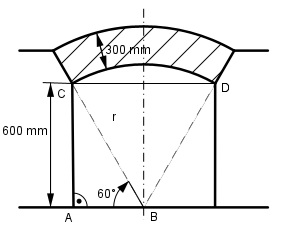

Aufgabe 148 Das 180 m lange Bogengewölbe ist aus Beton. Wieviel Material braucht man zur Herstellung? Wie viel m3 Erdreich müssen für den überdeckten Schacht ausgebaggert werden?

Im Dreieck ABC gilt: 600 mm tan 60° = --------- |*AB AB AB * tan 60° = 600 mm |:tan 60° 600 mm 600 mm AB = --------- = --------- = 346,4 mm tan 60° 1,732 600 mm sin 60° = --------- |*r r r * sin 60° = 600 mm |:sin 60° 600 mm 600 mm r = ---------- = -------- = 692,8 mm sin 60° 0,866 raußen = 692,8 mm + 300 mm = 992,8 mm 180 m = 180 000 mm VGewölbe = 60° = π * (992,82mm2 - 692,82mm2)*180 000 mm * ----- 360° VGewölbe = 47 635 056 000 mm3 = 47,6 m3 CD = 2 * AB = 2 * 346,4 mm = 692,8 mm VSchacht = = [Rechteck+(Kreisausschnitt - Dreieck)]*180000 mm VSchacht = 60° = [692,8 mm * 600 mm + π * 692,82 mm2 * ------ - 360° 692,8mm * 600 mm - -------------------] *180 000 mm 2 VSchacht = = [415680 mm2+(251185 mm2-207840 mm2)]*180000 mm VSchacht = 459 025 mm2 * 180 000 mm = = 82 624 500 000 mm3 VSchacht = 82,6 m3